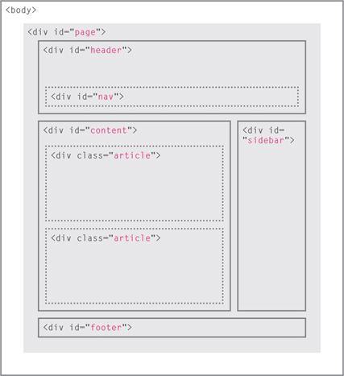
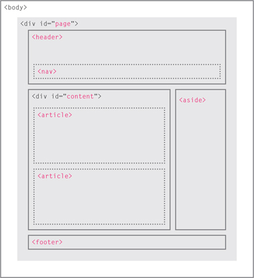
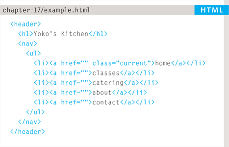
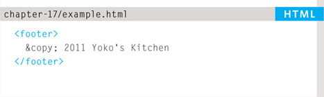
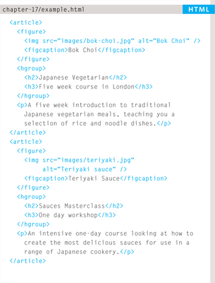
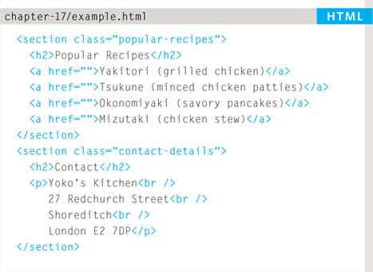
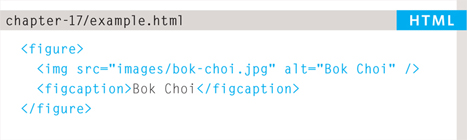
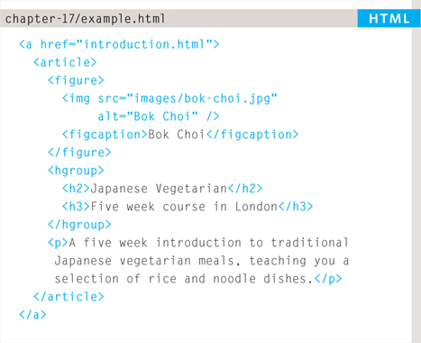
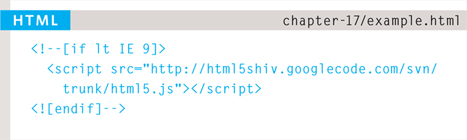

HTML5 is introducing a new set of elements that help define the structure of a page.
They are covered here (rather than with the other HTML elements you met earlier in the book) because you'll find it easier to understand how they can be used now that you have seen how CSS can control the layout a page. These new elements are going to play an important part in creating layouts going forward. In this chapter you will see:
As with all HTML5 and CSS3 content, its usage is still subject to change but it is already widely being used by web developers and it is likely that you will want to use them.
For a long time, web page authors used <div> elements to group together related elements on the page (such as the elements that form a header, an article, footer or sidebar). Authors used class or id attributes to indicate the role of the <div> element in the structure of the page.
On the right you can see a layout that is quite common (particularly on blog sites).
At the top of the page is the header, containing a logo and the primary navigation.
Under this are one or more articles or posts. Sometimes these are summaries that link to individual posts.
There is a side bar on the right-hand side (perhaps featuring a search option, links to other recent articles, other sections of the site, or even ads).
When coding a site like this, developers would usually put these main sections of the page inside <div> elements and use the class or id attributes to indicate the purpose of that part of the page.

HTML5 introduces a new set of elements that allow you to divide up the parts of a page. The names of these elements indicate the kind of content you will find in them. They are still subject to change, but that has not stopped many web page authors using them already.

This example has exactly the same structure as seen on the previous page. However, many of the <div> elements have been replaced by new HTML5 layout elements.
For example, the header sits inside a new <header> element, the navigation in a <nav> element, and the articles are in individual <article> elements.
The point of creating these new elements is so that web page authors can use them to help describe the structure of the page. For example, screen reader software might allow users to ignore headers and footers and get straight to the content. Similarly, search engines might place more weight on the content in an <article> element than that in the <header> or <footer> elements. I think you will agree that it also makes the code easier to follow.
The <header> and <footer> elements can be used for:
In this example, the <header> element used to contain the site name and the main navigation. The <footer> element contains copyright information, along with links to the privacy policy and terms and conditions. Each individual <article> and <section> element can also have its own <header> and <footer> elements to hold the header or footer information for that section within the page.
For example, on a page with several blog posts, each individual post can be thought of as a separate section. The <header> element can therefore be used to contain the title and date of each individual post, and the <footer> might contain links to share the article on social networking sites.
Please note that all of the code shown in this chapter is referenced in one HTML document which is called: html5-layout.html


The <nav> element is used to contain the major navigational blocks on the site such as the primary site navigation.
Going back to our blog example, if you wanted to finish an article with links to related blog posts, these would not be counted as major navigational blocks and therefore should not sit inside a <nav> element.
At the time of writing, some of the developers that were already using HTML5 decided to use the <nav> element for the links that appear at the bottom of every page (links to things like privacy policy, terms and conditions and accessibility information). Whether this will be widely adopted is still yet to be seen.
The <article> element acts as a container for any section of a page that could stand alone and potentially be syndicated.
This could be an individual article or blog entry, a comment or forum post, or any other independent piece of content.
If a page contains several articles (or even summaries of several articles), then each individual article would live inside its own <article> element.
The <article> elements can even be nested inside each other. For example, a blog post might live inside one <article> element and each comment on the article could live inside its own child <article> element.

The <aside> element has two purposes, depending on whether it is inside an <article> element or not.
When the <aside> element is used inside an <article> element, it should contain information that is related to the article but not essential to its overall meaning. For example, a pullquote or glossary might be considered as an aside to the article it relates to.
When the <aside> element is used outside of an <article> element, it acts as a container for content that is related to the entire page. For example, it might contain links to other sections of the site, a list of recent posts, a search box, or recent tweets by the author.
The <section> element groups related content together, and typically each section would have its own heading.
For example, on a homepage there may be several <section> elements to contain different sections of the page, such as latest news, top products, and newsletter signup.
Because the <section> element groups related items together, it may contain several distinct <article> elements that have a common theme or purpose.
Alternatively, if you have a page with a long article, the <section> element can be used to split the article up into separate sections.
The <section> element should not be used as a wrapper for the entire page (unless the page only contains one distinct piece of content). If you want a containing element for the entire page, that job is still best left to the <div> element.

The purpose of the <hgroup> element is to group together a set of one or more <h1> through <h6> elements so that they are treated as one single heading.
For example, the <hgroup> element could be used to contain both a title inside an <h2> element and a subtitle within an <h3> element.
This element has had a mixed reception. When it was first proposed by the people developing HTML5, there were some complaints and it was withdrawn from the HTML5 proposals. However, some people changed their minds and it has been added it back into the language. Some developers do not like the use of the <hgroup> element, and prefer to place a subtitle inside a <p> element (using an attribute to indicate that it is a subheading).
Some suggest that it is of little use other than as a styling hook. It has, however, been popular with those developers who believe that it is useful to group together the primary heading and the subheading (as both can be integral parts of a heading).
You already met the <figure> element in Chapter 5 when we looked at images. It can be used to contain any content that is referenced from the main flow of an article (not just images).
It is important to note that the article should still make sense if the content of the <figure> element were moved (to another part of the page, or even to a different page altogether).
For this reason, it should only be used when the content simply references the element (and not for something that is absolutely integral to the flow of a page).
Examples of usage include:
The <figure> element should also contain a <figcaption> element which provides a text decription for the content of the <figure> element. In this example, you can see a <figure> has been added inside the <article> element.

It may seem strange to follow these new elements by revisiting the <div> element again. (After all, the new elements are often going to be used in its place.)
However, the <div> element will remain an important way to group together related elements, because you should not be using these new elements that you have just met for purposes other than those explicitly stated.
Where there is no suitable element to group a set of elements, the <div> element will still be used. In this example, it is used as a wrapper for the entire page.
Some people have asked why there is no <content> element to contain the main part of a page. The reason is that anything that lies outside of the <header>, <footer> or <aside> elements can be considered as the main content.
HTML5 allows web page authors to place an <a> element around a block level element that contains child elements. This allows you to turn an entire block into a link.
This is not a new element in HTML5, but it was not seen as a correct usage of the <a> element in earlier versions of HTML.


Older browsers that do not know the new HTML5 elements will automatically treat them as inline elements. Therefore, to help older browsers, you should include the line of CSS on the left which states which new elements should be rendered as block-level elements.
Also, IE9 was the first version of Internet Explorer to allow CSS rules to be associated with these new HTML5 layout elements. In order to style these elements using earlier versions of IE, you need to use a simple JavaScript known as the HTML5 shiv or HTML5 shim.
You do not need to understand JavaScript to use it. You can just link to a copy that Google hosts on its servers. It should be placed inside a conditional comment which checks if the browser version is less than (hence the lt) IE9.
Unfortunately, this workaround does require that anyone using IE8 or earlier versions of IE has JavaScript enabled in their browser. If they do not have JavaScript enabled then they will not be able to see the content of these HTML5 elements.
This example shows a cooking site built using new HTML5 elements to describe the structure of the page (rather than just grouping items using <div> elements).
The header and footer of the page sit inside <header> and <footer> elements. The courses are grouped together inside a <section> element that has a class attribute whose value is courses (to distinguish it from other <section> elements on the page). The sidebar sits inside an <aside> element.
Each of the courses lives inside an <article> element, and use the <figure> and <figcaption> elements to contain an image. The headings for the courses have subheadings, so these are grouped inside an <hgroup> element. In the sidebar, the recipes and contact details are placed inside separate <section> elements.
The page is styled using CSS. The only difference is that our selectors are using the new HTML5 elements to allow us to create rules that target those elements. In order for the CSS to work in versions of IE before Internet Explorer 9, the HTML5 page contains a link to the HTML5 shiv JavaScript (hosted on Google's servers) inside a conditional comment.
<!DOCTYPE html> <html> <head> <title>HTML5 Layout</title> <style type=“text/css”> header, section, footer, aside, nav, article, figure, figcaption { display: block;} body { color: #666666; background-color: #f9f8f6; background-image: url(“images/dark-wood.jpg”); background-position: center; font-family: Georgia, times, serif; line-height: 1.4em; margin: 0px;} .wrapper { width: 940px; margin: 20px auto 20px auto; border: 2px solid #000000; background-color: #ffffff;} header { height: 160px; background-image: url(images/header.jpg);} h1 { text-indent: −9999px; width: 940px; height: 130px; margin: 0px;} nav, footer { clear: both; color: #ffffff; background-color: #aeaca8; height: 30px;} nav ul { margin: 0px; padding: 5px 0px 5px 30px;} nav li { display: inline; margin-right: 40px;} nav li a {
color: #ffffff;} nav li a:hover, nav li a.current { color: #000000;} section.courses { float: left; width: 659px; border-right: 1px solid #eeeeee;} article { clear: both; overflow: auto; width: 100%;} hgroup { margin-top:40px;} figure { float: left; width: 290px; height: 220px; padding: 5px; margin: 20px; border: 1px solid #eeeeee;} figcaption { font-size: 90%; text-align: left;} aside { width: 230px; float: left; padding: 0px 0px 0px 20px;} aside section a { display: block; padding: 10px; border-bottom: 1px solid #eeeeee;} aside section a:hover { color: #985d6a; background-color: #efefef;} a { color: #de6581; text-decoration: none;} h1, h2, h3 { font-weight: normal;} h2 {
margin: 10px 0px 5px 0px; padding: 0px;} h3 { margin: 0px 0px 10px 0px; color: #de6581;} aside h2 { padding: 30px 0px 10px 0px; color: #de6581;} footer { font-size: 80%; padding: 7px 0px 0px 20px;} </style> <!--[if lt IE 9]> <script src=“http://html5shiv.googlecode.com/svn/trunk/html5.js”></script> <![endif]--> </head> <body> <div class=“wrapper”> <header> <h1>Yoko's Kitchen</h1> <nav> <ul> <li><a href=“” class=“current”>home</a></li> <li><a href=“”>classes</a></li> <li><a href=“”>catering</a></li> <li><a href=“”>about</a></li> <li><a href=“”>contact</a></li> </ul> </nav> </header> <section class=“courses”> <article> <figure> <img src=“images/bok-choi.jpg” alt=“Bok Choi” /> <figcaption>Bok Choi</figcaption> </figure> <hgroup> <h2>Japanese Vegetarian</h2> <h3>Five week course in London</h3> </hgroup>
<p>A five week introduction to traditional Japanese vegetarian meals, teaching you a selection of rice and noodle dishes.</p> </article> <article> <figure> <img src=“images/teriyaki.jpg” alt=“Teriyaki sauce” /> <figcaption>Teriyaki Sauce</figcaption> </figure> <hgroup> <h2>Sauces Masterclass</h2> <h3>One day workshop</h3> </hgroup> <p>An intensive one-day course looking at how to create the most delicious sauces for use in a range of Japanese cookery.</p> </article> </section> <aside> <section class=“popular-recipes”> <h2>Popular Recipes</h2> <a href=“”>Yakitori (grilled chicken)</a> <a href=“”>Tsukune (minced chicken patties)</a> <a href=“”>Okonomiyaki (savory pancakes)</a> <a href=“”>Mizutaki (chicken stew)</a> </section> <section class=“contact-details”> <h2>Contact</h2> <p>Yoko's Kitchen<br /> 27 Redchurch Street<br /> Shoreditch<br /> London E2 7DP</p> </section> </aside> <footer> © 2011 Yoko's Kitchen </footer> </div><!-- .wrapper --> </body> </html>